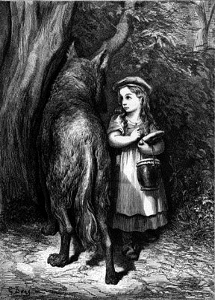
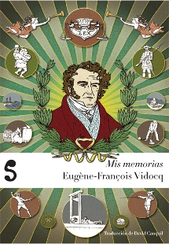
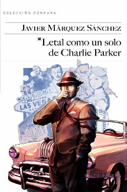
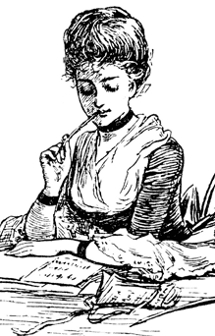
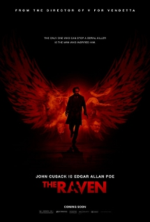
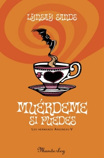
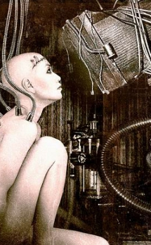

Mon, 26 Mar 2012 05:53:16 +0000
Philip Pullman revisitará a los Hermanos Grimm
Philip Pullman revisitará a los Hermanos Grimm
Jacob y Wilhelm Grimm se convirtieron en figuras eternamente conocidas gracias a su labor como folcloristas, revisando y anotando decenas de viejas historias y leyendas populares que corrían de boca en boca por los bosques y montañas de la Europa del siglo XIX. Su trabajo sirvió para fijar en un momento determinado esos cuentos populares [...]

Jacob y Wilhelm Grimm se convirtieron en figuras eternamente conocidas gracias a su labor como folcloristas, revisando y anotando decenas de viejas historias y leyendas populares que corrían de boca en boca por los bosques y montañas de la Europa del siglo XIX.
Su trabajo sirvió para fijar en un momento determinado esos cuentos populares que habían ido cambiando desde hacía siglos, leyendas que llegaron a su fin evolutivo al ser asentadas en negro sobre blanco, pero que se hicieron también mundialmente famosas, fuera de sus lugares de origen.
Pues bien, se acerca el 200 aniversario de la primera publicación hecha por los hermanos Grimm y esa fecha ha motivado al escritor Philip Pullman para revisar cincuenta de sus cuentos favoritos y realizar una adaptación, «clara como el agua», en el que además añade numerosos comentarios y contexto sobre los relatos.
Pullman no es un novato en esto de los cuentos para jóvenes, su trilogía de La materia oscura ha sido un superventas, llegando a ser adaptada al cine bajo el título de La brújula dorada. También es cierto que Pullman es uno de los autores más denunciados por asociaciones cristianas debido a su discurso científico y laicista y sus libros han sido prohibidos en numerosas bibliotecas americanas. Justamente por esto me parece una noticia reseñable: un peso pesado de la literatura juvenil menos complaciente revisando los clásicos de entre los clásicos.
Pullman trabajará con títulos como Rapunzel, Blancanieves o Cenicienta y ha asegurado que el resultado agradará tanto a jóvenes como a mayores. Lo cierto es que parece haber un pequeño resurgimiento de estas historias, con series de televisión como Grimm, que mezcla leyendas y detectives, o Once upon a time, que está logrando unos muy buenos índices de audiencia.
Sea como sea, el 6 de septiembre verá la luz el libro de Pullman con Penguin y espero ansioso a que alguna editorial española le esté siguiendo la pista para ofrecernos una buena traducción lo antes posible.
Vía: The Guardian
Sat, 24 Mar 2012 07:00:09 +0000
Esos crueles editores
Esos crueles editores
Como en cualquier sector u oficio, la actuación de unos pocos puede ensombrecer la imagen de la mayoría. Sería poco realista, y totalmente injusto para con aquellos profesionales que se dejan la piel en su labor, trabajando con integridad y esmero, juzgar a la persona del editor basándonos en los numerosos casos que se conocen [...]
Como en cualquier sector u oficio, la actuación de unos pocos puede ensombrecer la imagen de la mayoría. Sería poco realista, y totalmente injusto para con aquellos profesionales que se dejan la piel en su labor, trabajando con integridad y esmero, juzgar a la persona del editor basándonos en los numerosos casos que se conocen de abuso y estafa propiamente dicha. Pero no hay duda de que para el escritor los editores son la mayor barrera a superar, y su posición de árbitros de calidad y gestores de la obra del autor coloca a este en una posición cuanto menos precaria. Surgen una tras otra noticias de índole casi fantástica, sobre todo en lo que se refiere a grandes empresas editoriales, respecto al estado lamentable en que han acabado grandes escritores a pesar de haber proporcionado pingües beneficios a aquellos que los han publicado.
Uno de los casos llamativos más recientes ha sido el de Gary Friedrich. El nombre puede que no os resulte familiar, pero Gary fue el mayor responsable de la imagen moderna del personaje del Motorista Fantasma, esa figura popular del cómic estadounidense que ya se ha llevado al cine en dos ocasiones, con un archiconocido Nicholas Cage como protagonista. Friedrich no obtuvo una gran retribución en sus días con Marvel, y tampoco gozó de derechos de autor con los que alimentarse una vez terminó su trabajo con ellos. Sobrevivió a duras penas, ayudándose de lo obtenido con las ventas de láminas firmadas de su personaje. Enfadado tras ver el excelente rendimiento de su superhéroe a manos de la industria del cómic y del cine, demandó a la gigantesca Marvel y fracasó estrepitosamente: no sólo no se le reconocieron derechos de autor sino que la editorial contraatacó llevándolo a juicio por vender reproducciones de imágenes que según la empresa le pertenecían. Ahora, Friedrich, que apenas tiene para comer, tiene que pagar 17,000 dólares por vender unas láminas de imágenes que él mismo creó. Esta lamentable situación ha escandalizado a la industria del cómic y de la literatura en general, con voces tan conocidas como la de George R. R. Martin haciéndose eco. Martin propone a los que vayan a ver la película más reciente que consideren además donar un porcentaje mínimo de lo que les costó la entrada al cine para un fondo dedicado a ayudar a Friedrich (más información en su blog, que está enfermo, a punto de perder su vivienda, y endeudado hasta las cejas por pagarle a una empresa a la que ya le ha aportado una rentabilidad más que notable.
Friedrich no es ni la primera ni la última víctima en este sentido, pero a lo mejor la más conocida sea el creador de Sandokán, Emilio Salgari, que se hizo el harakiri con tan sólo 49 años, en 1911, ahogado por su terrible situación familiar y económica. Sus editores lo sometían a jornadas eternas de trabajo sin un salario decente, y finalmente les dedicó las siguientes palabras en su nota de suicidio:
A vosotros, que os habéis enriquecido con mi piel, manteniéndome a mí y a mi familia en una continua semimiseria o aún peor, sólo os pido que en compensación por las ganancias que os he proporcionado, os ocupéis de los gastos de mis funerales. Os saludo rompiendo la pluma.
Sea como sea, recordemos que estos son casos concretos no atribuibles a todo el gremio editorial, y que en la mayoría de las ocasiones no son los editores, ni mucho menos, los que obtienen la parte del león en las ventas de libros (sobre todo en lo que se refiere al soporte tradicional), sino distribuidoras y puntos de venta. Curiosamente se habla poco o nada de productos culturales (libros, películas, arte) condenados al fracaso por una mala distribución, cuando se trata de una situación más que frecuente. Queda claro que los casos más notables son aquellos que obtienen mayor repercusión: autores y traductores que han fallecido en la más absoluta miseria tras un éxito rotundo de sus obras; y con frecuencia observamos una demonización de la figura del editor, sin contar con datos como qué tipo de contrato había aceptado y firmado el escritor o, en casos más extremos, si había dilapidado sus innumerables regalías en drogas, alcohol y conejitas de Playboy.
Thu, 22 Mar 2012 06:53:20 +0000
Mis memorias, de Eugène-François Vidocq
Mis memorias, de Eugène-François Vidocq
Personalmente, creo que Vidocq es uno de los personajes más interesantes del siglo XIX francés y cuya influencia en el pensamiento político moderno, sobre todo en lo que concierne a los servicios secretos y la policía, va más allá de lo que muchos conocen. Pero hagamos un poco de historia, ¿quién es Vidocq? ¿Qué hizo [...]

Personalmente, creo que Vidocq es uno de los personajes más interesantes del siglo XIX francés y cuya influencia en el pensamiento político moderno, sobre todo en lo que concierne a los servicios secretos y la policía, va más allá de lo que muchos conocen.
Pero hagamos un poco de historia, ¿quién es Vidocq? ¿Qué hizo para servir de inspiración a Balzac, Dumas, Víctor Hugo o incluso a Doyle? Los datos que podemos manejar vienen de una biografía de dudosa atribución al propio Vidocq (lo más probable es que fuera un autor contratado para dar forma a sus recuerdos… o invenciones) y la verdad es que su vida, si es tal cual la podemos leer, da para mucho.
Desertor del ejército tras militar en los granaderos -un cuerpo de élite-, Vidocq fue condenado a la guillotina -de la que se libró, así como de un matrimonio no deseado- y acabó por unirse a una banda de ladrones. En esa época de su vida, Vidocq se comportó como un verdadero libertino, entre prostitutas, sonoros atracos y en una lucha constante con la guarida de París. Fue arrestado innumerables veces y otras tantas escapó. Llegó hasta combatir como corsario contra barcos ingleses, sin que eso mermara nuevas oportunidades en su vida para delinquir, ser encerrado y volver a escapar. Tras varios intentos de llevar una vida más normal, sin demasiado éxito, Vidocq se entregó a la policía y comenzó a trabajar como soplón. Con el tiempo, Vidocq creció en influencia y fue responsable de la formación del cuerpo que llegaría a ser la Sûreté Nationale (Seguridad Nacional) convirtiéndose en uno de los hombres más poderosos del París de la Restauración, aunque también mantuvo su despacho abierto para atender casos privados. En los últimos años de su vida, Vidocq cambió las intrigas callejeras por las políticas en despiadados juegos de poder.
Como veis Vidocq fue todo un personaje que, además, dotó de mayor entidad a la criminología científica y que se hizo famoso por toda Europa, sirviendo de modelo a los primeros detectives de ficción. En tiempos más recientes, Vidocq sirvió también de inspiración a una curiosa película francesa protagonizada por Gerard Depardieu.
Pues bien, la gente de Libros del Silencio edita su biografía. Es uno de esos libros peculiares que no suelen ser muy conocidos, pero creo yo que, viendo el caldo y calaña del personaje, merece la pena que le echemos un vistazo, ¿verdad?
Tue, 20 Mar 2012 07:04:26 +0000
Letal como un solo de Charlie Parker, de Javier Márquez Sánchez
Letal como un solo de Charlie Parker, de Javier Márquez Sánchez
La primera vez que me encontré con Eddie Bennett él estaba sentado a la mesa de Dean Martin y Frank Sinatra en el Flamingo. Es posible que en ese momento no se fijara demasiado en mi ya que no podía quitar los ojos de la corista que tenía sentada en el regazo. No le culpo, [...]

La primera vez que me encontré con Eddie Bennett él estaba sentado a la mesa de Dean Martin y Frank Sinatra en el Flamingo. Es posible que en ese momento no se fijara demasiado en mi ya que no podía quitar los ojos de la corista que tenía sentada en el regazo. No le culpo, la chica tenía las piernas tan largas que cuando llegabas a verle los pies tenías que ponerte de puntillas. Lo cierto es que nos volvimos a encontrar tres o cuatro veces a lo largo de los años, pero nunca tuvimos la oportunidad de trabajar juntos, al menos hasta que Javier Márquez Sánchez tuvo la idea de escribir Letal como un solo de Charlie Parker.
Casi ni me acordaba del bueno de Bennett, ¿cuántos años tendría ya, setenta? cuando me llegó un paquete de Salto de Página. Así que al final había logrado salir en los papeles… con la de líos en los que se metió por tanta periodista guapa, no me extraña que acabara de ese modo. Abrí el libro y comencé a leer. Después del primer puñetazo no pude borrar una sonrisa de mi cara, era el mismo Eddie de siempre.
Letal como un solo de Charlie Parker es un homenaje a la novela negra de los años cuarenta y cincuenta, llena de personajes monolíticos llenos de contradicciones que acaban siendo engatusados por mujeres complicadas que desprecian su ayuda mientras su corazón de hielo comienza a derretirse.
Ambientada en Las Vegas años 50, el paraíso de la mafia, y con una rutilante retahíla de estrellas de la época, Dean Martin, Frank Sinatra, John Wayne… además de los típicos sheriffs, los jefes mandones, las chicas guapas, los barmans omnipresentes y los cadáveres, claro. Esto no sería una novela negra al uso sin un par de cadáveres y un montón de asuntos por resolver.
Márquez Sánchez construye una novela negra que tira de clichés y tópicos para formar un constructo moderno, en el que el homenaje de sabor clásico prima sobre el verismo o los personajes desgarrados que podemos encontrar en la obra de Ellroy, por ejemplo, aunque sí que toma elementos típicos de su argumentario. Letal como un solo de Charlie Parker nos suaviza de ese modo el demoledor mundo negro de Ellroy y le vuelve a dar un toque más clásico y alegre, llevándonos al territorio de Chandler y Hammett.
En resumen, Letal como un solo de Charlie Parker entretiene y hace disfrutar, sobre todo a los aficionados a la novela negra más clásica, pero que también encontrará su público en los aficionados al cine negro, del que bebe casi tanto como de los libros, y, por qué no, a cualquiera con ganas de disfrutar de una buena historia con buenos, malos, cínicos, canallas, guapas, feos y un par de copas de Southern Confort.
Sun, 18 Mar 2012 07:00:06 +0000
¿Es sexista la crítica literaria actual? (y II)
¿Es sexista la crítica literaria actual? (y II)
En relación a lo que exponíamos en la primera parte, acerca del análisis de los datos ofrecidos por VIDA sobre la alarmante desproporción de hombres y mujeres en las publicaciones críticas más importantes, Emily Gould, bloguera y escritora para el New York Times, ha expuesto otra posibilidad. Gould considera que las mujeres se interesan menos [...]

En relación a lo que exponíamos en la primera parte, acerca del análisis de los datos ofrecidos por VIDA sobre la alarmante desproporción de hombres y mujeres en las publicaciones críticas más importantes, Emily Gould, bloguera y escritora para el New York Times, ha expuesto otra posibilidad. Gould considera que las mujeres se interesan menos por puestos en publicaciones “serias” como el New Yorker o el London Review debido a que obtienen compensaciones económicas bastante más interesantes en otro tipo de medios, como las revistas del corazón. Recuerda al caso de tantos buenos periodistas que abandonan puestos de trabajo mal pagados en medios de prestigio para dedicarse al rentable negocio del paparazzi y el cotilleo. No podemos conocer del todo las razones que hay detrás de los desconcertantes datos que ofrece VIDA, pero lo que queda claro es que la balanza no está ni mucho menos equilibrada.
En cuanto a España, estos datos encajan de manera oportuna en el debate actual acerca de la postura de la Real Academia de la Lengua frente al lenguaje sexista. Muchos de vosotros habréis leído el informe del filólogo y académico Ignacio Bosque (Sexismo lingüístico y visibilidad de la mujer), que rechaza muchas de las propuestas de diferentes guías, procedentes de instituciones y organismos oficiales, interesadas en sustituir el lenguaje actual por uno menos machista. Muchos (y muchas) profesionales de la lengua, defensores (¡y defensoras!) de la igualdad de la mujer, argumentan que estas propuestas de las guías son absurdas y ridículas, asegurando que un cambio en el lenguaje no va a modificar las condiciones más importantes de discriminación real (el lenguaje, al fin y al cabo, responde a las necesidades y evolución de la sociedad, no a la inversa). Sin embargo, como bien apuntó Elvira Lindo en un artículo de opinión en El País, estemos o no estemos de acuerdo con las declaraciones de la RAE, es innegable que sus miembros son, en su mayoría, masculinos.
Del mismo modo que ocurre con las publicaciones analizadas por VIDA, ¿es posible que un organismo pueda tomar decisiones del todo igualitarias y justas si la mayoría de sus participantes pertenecen a un solo sexo? Tenemos que evitar a toda costa caer en la distopía del cupo, pero la preponderancia de hombres en puestos ejecutivos y directivos sí puede señalar cierta preferencia a la hora de evaluar candidatos de ambos sexos, ya sea en el New York Times o en una gacetilla local, en un consejo universitario o en una escuela de primaria. Esto exige, a su vez, un mayor compromiso por parte de las mujeres; para las mujeres escritoras tal vez implique una creación menos focalizada, menos unida a la literatura tradicionalmente asociada a lo femenino, y para las mujeres críticas un mayor esfuerzo para posicionarse en lugares reservados para el hombre, sin ceder a las salidas fáciles y comerciales. Es sobre todo sangrante que esta situación de desigualdad pueda producirse en oficios que suelen asociarse a personas cultas, inteligentes y tolerantes.
Fri, 16 Mar 2012 06:57:59 +0000
De mito literario a héroe de acción
De mito literario a héroe de acción
Parece que existe desde hace poco cierta tendencia a transformar a personajes tranquilos e intelectuales en grandes héroes de acción al mejor estilo de Hollywood. Y si no que se lo pregunten al fantasma de Conan Doyle, cuyo Sherlock Holmes, ese detective opiónamo amante del violín y de tranquilas elucubraciones en su saloncito de Baker [...]

Parece que existe desde hace poco cierta tendencia a transformar a personajes tranquilos e intelectuales en grandes héroes de acción al mejor estilo de Hollywood. Y si no que se lo pregunten al fantasma de Conan Doyle, cuyo Sherlock Holmes, ese detective opiónamo amante del violín y de tranquilas elucubraciones en su saloncito de Baker Street, se ha visto convertido en un luchador hiperactivo en las películas protagonizadas por Jude Law y Robert Downey Jr., o en un peculiar analista sin miedo a recorrerse las calles de Londres a pie, acompañado de un ex-militar aficionado a la violencia, en la serie de la BBC Sherlock. Como si con esto no bastara, la CBS amenaza con estrenar otra serie basada en el mítico Holmes, con la actriz Lucy Liu como Watson. Y aprovechando esta moda de glorificar a personajes ligeramente siniestros, dotándolos de características asociadas al héroe moderno del cine, surge John Cusack dispuesto a interpretar a un Edgar Allan Poe muy diferente al que nos habíamos imaginado.
Cusack interpreta al Poe cercano a su muerte, al poeta unos días antes de fallecer, obsesionado con descubrir la identidad de un asesino en serie que reproduce crímenes que aparecen en los relatos del escritor. La película, por tanto, cobra un tono de intriga detectivesca oscura más cercana al guión de Se7en que a cualquiera de los textos del propio Poe. Más allá de la popularidad del escritor, ¿es realmente necesario tomar a figuras clásicas de la literatura y ponerlas en un contexto moderno, adaptarlas a la moda y a las tendencias de las grandes producciones del cine comercial? Habrá quien argumente que este tipo de producto acercará a los más jóvenes y a los menos interesados en la lectura a la figura del autor romántico, del mismo modo que hubo quien argumentó que el Romeo y Julieta de Baz Luhrmann acercaba a sus espectadores al texto de Shakespeare. Personalmente tengo la sospecha de que no irán más allá del mero entretenimiento.
No son los únicos afectados, por supuesto. Mientras la serie Sherlock sostiene la cabeza bien alta gracias a un trabajado guión de escritores como Stephen Moffat (responsable también de la intrigante adaptación a la pequeña pantalla de El extraño caso del doctor Jekyll y el señor Hyde) y a una actuación sobresaliente por parte de los protagonistas, no podemos decir lo mismo de Grimm, que es capaz de introducir en una sola serie todos los tópicos posibles de una producción policíaca, aderezada de actores poco notables, con la excusa de utilizar ideas entresacadas de los relatos más oscuros de los hermanos Grimm. El protagonista es un elegido (¿os suena?), procedente de una larga tradición familiar, con ciertas armas y poderes heredados (¿os suena?), que debe investigar extraños casos de asesinato relacionados con criaturas sobrenaturales (original, ¿eh?), mientras intenta proteger a los que quiere. Tiene un compañero negro que actúa en ocasiones de contrapunto cómico, un jefe maligno y una novia de la que debe distanciarse si no quiere que acabe hecha cachitos por alguna fuerza desconocida; y en vez de descubrir de golpe todo lo referente (y necesario) acerca de su pasado, debe investigarlo para obtener unos pocos datos, de manera dolorosamente lenta pero muy conveniente. Todo un cóctel de todo lo que hemos visto ya mil veces en televisión, que con toda probabilidad tampoco empujará a los espectadores a comprarse un tomo de cuentos de hadas recopilados por los conocidos hermanos alemanes.
Wed, 14 Mar 2012 06:54:43 +0000
El café, combustible para escritores
El café, combustible para escritores
Todos hemos oído hablar de los grandes textos que surgían de la pluma de los mejores autores bajo el efecto del alcohol o de todo tipo de drogas pero, desde un punto de vista práctico, ¿cuál es el mejor amigo del escritor medio, atosigado por los demonios de la fecha de entrega, la inspiración y [...]
Todos hemos oído hablar de los grandes textos que surgían de la pluma de los mejores autores bajo el efecto del alcohol o de todo tipo de drogas pero, desde un punto de vista práctico, ¿cuál es el mejor amigo del escritor medio, atosigado por los demonios de la fecha de entrega, la inspiración y las prisas? Seguro que habéis acertado: la cafeína. Y nada mejor para ello que una buena taza de aromatizado café.
Claro que los hay que llevan sus hábitos a límites insospechados. Hay innumerables blogs, en todos los idiomas, de autores, más o menos conocidos, que admiten, con orgullo, una adicción doble: a la escritura y al café. En Alemania, el equivalente a la conocida marca estadounidense Starbucks es Balzac Coffee, nombrada en honor a uno de los mayores adictos al café que conocemos, Honoré de Balzac (por cierto, ¿sabíais que en Alemania se consume más café que cerveza?). El autor de La comedia humana podía llegar a consumir hasta cincuenta tazas de café al día, y se sospecha que fue esta adicción a la cafeína la que lo arrastró a una temprana muerte a la edad de 51 años. También escribió con gran detalle acerca de los beneficios e inconvenientes de ese brebaje especial, que lo llevaba al extremo de masticar granos de café si no tenía una humeante taza disponible.
Es interesante añadir que de no ser por Goethe, tal vez habríamos tardado mucho más en descubrir la cafeína. El escritor alemán dedicó largas horas a investigar los efectos del café, y en un encuentro que tuvo con el joven científico Friedlieb Ferdinand Runge, al que había invitado a su hogar para que le enseñara los resultados de un experimento que realizaba Runge con extracto de belladonna sobre su propio gato, le instó a analizar unos granos de café para descubrir qué propiedades se escondían tras ellos. Runge, gran admirador del poeta, le hizo caso, y consiguió identificar la cafeína en su laboratorio, por lo que se le considera el responsable de su descubrimiento.
El café, por lo general, es uno más de los hábitos del escritor, que pueden ser de lo más disparatados. Truman Capote aseguraba que era un “escritor horizontal”, que tenía que escribir tumbado, con un café y un cigarrillo. Del café pasaba al té, del té al jerez, y del jerez a los martinis, conforme avanzaba el día. Escribía sus dos primeros borradores a mano, el tercero lo realizaba a máquina, apoyando el aparato sobre sus rodillas.
Por otro lado, es comprensible el atractivo de las cafeterías, donde pueden darse la mano dos condiciones ideales para el escritor: la disponibilidad de café y cierta tranquilidad para escribir (o, en el caso de algunos, la disponibilidad de bebidas azucaradas que hacen pasarse por café y la posibilidad de aparecer con un portátil de moda para hacerse el interesante mientras uno teclea).Y tal vez no sea mala idea, teniendo en cuenta que algunos de los más conocidos escribieron sus obras superventas en cafeterías, como por ejemplo, la anglosajona J. K. Rowling que, entre tantos otros espacios públicos, escribía sus libros de Harry Potter en el Elephant House de Edimburgo.
Mon, 12 Mar 2012 07:05:29 +0000
El declive de la chick-lit
El declive de la chick-lit
A los más observadores no se les habrá escapado que en los últimos años se han producido cambios lentos pero llamativos en los expositores de la sección de libros de los grandes almacenes. Donde antes abundaban las cubiertas en colores pastel con rotulación florida e imágenes a lo Jordi Labanda, de repente nos invaden portadas [...]

A los más observadores no se les habrá escapado que en los últimos años se han producido cambios lentos pero llamativos en los expositores de la sección de libros de los grandes almacenes. Donde antes abundaban las cubiertas en colores pastel con rotulación florida e imágenes a lo Jordi Labanda, de repente nos invaden portadas oscuras con títulos en fuentes góticas e imágenes sangrientas. Parece que los vampiros se han comido a las solteras.
En un artículo reciente para el U-T San Diego, la escritora estadounidense Jennifer Coburn se preguntaba si realmente había muerto el chick-lit, ese género dirigido a mujeres que se centraba en la vida profesional y amorosa de sus protagonistas. La propia Coburn afirmaba que si bien no había tenido problemas para vender sus obras allá por el 2003, ahora le resultaba casi imposible. “La chick-lit está muerta”, le dicen sus editores. Coburn asegura que se trata más bien de una resaca, y que siempre habrá un mercado mínimo para este tipo de literatura, o por lo menos lo habrá una vez los lectores se recuperen de la saturación que sufrieron hace unos años, cuando por cada libro de calidad de este tipo que se publicaba, aparecían veinte que no aportaban nada nuevo al género. Sin embargo, incluso algunos de los grandes nombres de la chick-lit se han apuntado a la moda de la literatura para jóvenes adultos. Después de todo, un escritor tiene que comer, y si hay que escribir sobre vampiros, pues se escribe sobre vampiros.
Es innegable que, como en todas las burbujas que explotan, siempre quedará algún superviviente. A veces el talento es suficiente como para que el género escogido sea lo de menos. Escritoras como Marian Keyes, que de todas formas no se conformaba al canon de la chick-lit por completo, al ignorar algunos de los temas clásicos de éste e introducir elementos más oscuros y realistas, seguirán produciendo y vendiendo a un ritmo rentable. Aunque es posible que cambien sus portadas y su clasificación, sobrevivirá la calidad del texto, que siempre gozará de seguidores independientemente de la estrategia de venta. Otros, que se basaban en la repetición de tópicos y de argumentos pseudo-feministas más propios de una revista de moda que de una obra literaria, acabarán en el cementerio metafórico de los autores olvidados, o simplemente aderezarán dichos tópicos con algo de magia, sangre y tensión sexual en vez de zapatos de tacón, tarjetas de crédito y grandes tarrinas de helado. Lo que nos puede llamar la atención es que la sustitución de un género por otro implica que el público objetivo del primero debería coincidir con el del segundo. Puede extrañarnos, debido a que la edad media a la que está enfocada la chick-lit está entre los 25 y 40 años, mientras que el género de vampiros y similares, literatura de “jóvenes adultos”, está más bien enfocada a un público de entre 15 y 25 años. El mundo debe de estar lleno de mujeres de 35 enganchadas a Los juegos del hambre.
Sat, 10 Mar 2012 07:00:22 +0000
Literatura digital: unas notas
Literatura digital: unas notas
No, aunque parezca mentira, no voy a hablaros del mundo de los libros electrónicos, sus precios, las descargas en epub, los derechos de autor, novedades en eReaders o la cultura libre. Hoy al hablar de literatura digital no nos referimos a la que está digitalizada, no, sino a la que de alguna manera considera a [...]

No, aunque parezca mentira, no voy a hablaros del mundo de los libros electrónicos, sus precios, las descargas en epub, los derechos de autor, novedades en eReaders o la cultura libre. Hoy al hablar de literatura digital no nos referimos a la que está digitalizada, no, sino a la que de alguna manera considera a la tecnología como una herramienta más de trabajo para realizar su obra.
Hace poco os hablamos de la música creada para acompañar al libro, pero tampoco nos referimos a eso. En una época en la que los nuevos lectores son usuarios al mismo tiempo de vídeo, texto, música, imagen e hipertexto, el simple añadido de una música o de un vídeo no llega a transformar una obra en literatura digital.
Quizá el término literatura, entonces, no sea el más apropiado en este caso. Puede que las nuevas formas de expresión que usan tanto texto como imagen, además de un mayor grado de interactividad por parte de los usuarios, estén más cerca del videoarte como concepto que de la literatura más clásica, pese a que la mayor parte de sus estructuras narrativas sí que pertenezcan a un mundo literario. Algunos lo han llamado ciberliteratura y plantean grandes ramas que empiezan a surgir, sobre todo entre los más jóvenes e inquietos autores, gracias a las posibilidades que brindan las nuevas tecnologías de la información.
El uso del hiperenlace, la narrativa hipertextual, capaz de relacionar tanto a nivel narrativo como contextual el texto y las ideas, se funde con la escritura colaborativa, en la que una obra puede estar escribiéndose gracias al esfuerzo de cientos de personas. Incluso podemos encontrarnos un libro que, escribiéndose de esta forma, nunca tuviera un final; sería una verdadera Historia interminable.
Está claro que la poesía, por ejemplo, se presta más a este tipo de experimentaciones que la narrativa, pero las ideas que hoy en día se pueden aplicar son espectaculares, desde lo más simple, la sustitución de capítulos por vídeos, a juegos complejos como convertir una trama policial en un entrelazado de informes, pensamientos, documentos y pistas para introducir la mente del lector directamente en el cerebro del protagonista.
¿Que se consigue? El fin de la narración lineal, el abandono del formato libro tradicional para abrazar nuevas formas de concebir la literatura en la que se pueden usar tantos ingredientes como sean necesarios a la hora de apelar al sentimiento, a la acción o al sentido de la maravilla. Ni que decir tiene que las herramientas de lectura que han aparecido en los últimos años, como los ereaders o las tabletas electrónicas, son perfectas para desarrollar la literatura digital, todo un mundo de interacción que, pese a todo, nace y se complementa de manera natural con la literatura más clásica.
Thu, 08 Mar 2012 06:59:09 +0000
¿Dónde están los libros en Google Play?
¿Dónde están los libros en Google Play?
Sin duda, una de las más atractivas características de Google Play, el nuevo sistema de aplicaciones para sistemas Android, es la integración de la tienda de ebooks de Google, junto con otras tiendas dedicadas, por ejemplo, a la música o al vídeo. Sin embargo, debido a la falta de acuerdos entre Google y la mayoría [...]
Sin duda, una de las más atractivas características de Google Play, el nuevo sistema de aplicaciones para sistemas Android, es la integración de la tienda de ebooks de Google, junto con otras tiendas dedicadas, por ejemplo, a la música o al vídeo.
Sin embargo, debido a la falta de acuerdos entre Google y la mayoría de editoriales de España, y Europa, la tienda del gigante americano no está disponible todavía, se anuncia cada pocos meses y luego, nada de nada, y por lo tanto esa revolución de Google Play se nos ha quedado un poco corta.
Pese a todo, sigo sin verle la utilidad a sistemas basados en la lectura en dispositivos como móviles o tablets, al menos para los lectores habituales. Es cierto que la tienda de Google permite, en sus últimas actualizaciones, una descarga del archivo para que se pueda usar en cualquier dispositivo, con varios formatos disponibles, lo que supone una ventaja sobre otras tiendas. Si centralizan la compra en el móvil y logran un ecosistema compartido, tendrán un punto de ventaja a su favor.
El ecosistema de lectura es una de las opciones que se están retrasando mucho en España. El uso de un DRM restrictivo y el miedo de muchas editoriales está impidiendo que tras comprar un libro podamos leerlo donde queramos. Por ejemplo: comienzo el día en el metro leyendo un rato en el metro con mi teléfono móvil. Llego a la oficina y a la hora del almuerzo, leo otro par de páginas en mi ordenador y al llegar a casa por la tarde enciendo el ereader y le dedico un buen rato a terminar el libro. Esa lectura sincronizada entre dispositivos no es ciencia ficción, ya se hace sin problemas, pero la restricción de dispositivos lastra su uso habitual.
También es cierto que desde Google Play ya se pueden comprar libros interactivos, que vienen en forma de App y están creados directamente para el mercado del móvil y la tableta. De hecho, hay un superventas de cocina de Jamie Oliver y algunos infantiles ilustrados del Dr. Seuss.
Espero que la gente de Google pueda llegar a algún acuerdo con las editoriales españolas y diversificar el modelo de negocio, ya que es un actor muy importante a la hora de articular mejores precios, menos DRM, y su escaparate es uno de los más visitados del mundo, sobre todo ahora, con Google Play.